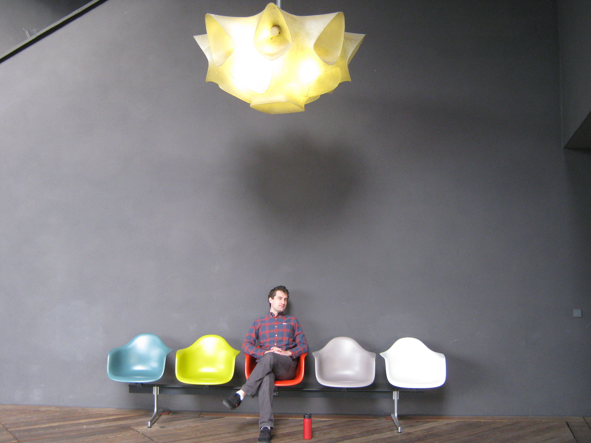

I am an Associate Professor in the mathematics department at UCL. Previously, I held post-doctoral positions at ETH Zürich and EPFL. I did my PhD at Stanford under the supervision of K. Soundararajan.
Contact me by email at i.petrow@ucl.ac.uk.
Number theory; especially the analytic theory of L-functions and automorphic forms.
Not a hiking photo:
